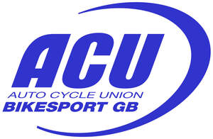

Trade Mark Journal No.2025/050 12 December 2025
UK00004302626 28 November 2025 (6,9,14,16,20,25,38,41)

- Class 6
- Metal badges.
- Class 9
- Protective helmets for sports; articles of protective clothing, footwear and headgear for the protection against accidents in motor sports; safety gloves for protection against accidents; protective goggles and eyewear; sunglasses; eyewear; cases, magnetic badges, electronic publications; downloadable publications; CD ROM's; DVD's; videos; audio visual recordings; recorded content; computer software; parts and fitting for all the aforesaid goods.
- Class 14
- Jewellery; cuff links; trophies made of or coated with precious metal; medals; key fobs, charity wrist bands; watches; clocks; horological instruments; lapel pins; parts and fittings for the aforesaid goods.
- Class 16
- Instructional and teaching materials; printer matter; tickets; printed promotional material; stationery; decalcomanias; stickers; transfers; greetings cards; calendars; photographs; posters; pens; writing instruments; notepads; printed paper signs; parts and fittings for all the aforesaid goods.
- Class 20
- Plastic sign boards; trophies made from plastic or wood; novelty badges for vehicles; badges made from plastic; holders for plastic badges; parts and fittings for the aforesaid goods.
- Class 25
- Clothing; footwear; headgear.
- Class 38
- Telecommunications; broadcasting services; electronic exchange of data, video, audio, text via computer and telecommunication networks; providing online forums; communication by online blogs; chat room services; consultancy, information and advisory services to all the aforesaid services.
- Class 41
- Entertainment; sporting and cultural activities; club services (entertainment and educational); training; educational courses; organisation, provision, production and distribution of television and radio production; film and video production and distribution; organisation and hosting of awards and award ceremonies; education; training; film and documentary production and rental; publication of educational teaching materials; consultancy, information and advisory services to all the aforesaid services.
The Auto-cycle Union